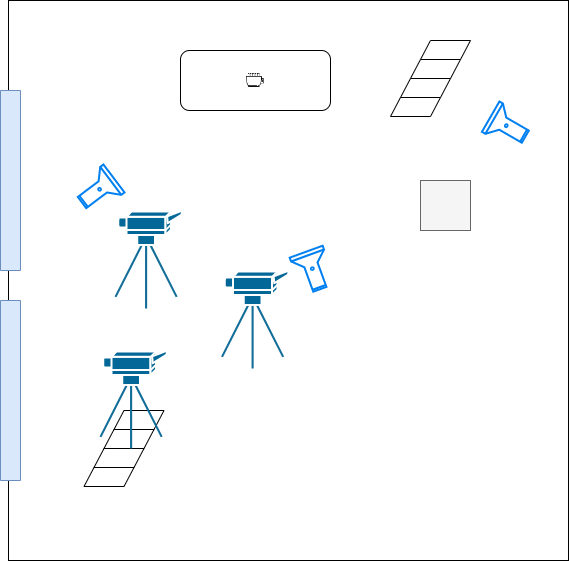

For my final project in the film module at SAE Zurich's Media Production program, I conceptualized
and created a short movie about coffee and its impact on the planet and how we as humanity will be
dealing with this resource in the future.
The task was to create a 7-10 minute long video about a topic that we could choose ourselves. In
order to combine our previously learned audio and filming skills, we had to combine both. It was
also mandatory to include two interviews.
I've created this shorter version for my ZHdK Portfolio which demonstrates my creative approach,
filmmaking and editing skills.
Shot on a Fuji XT4, Blackmagic 4k and edited in DaVinci Resolve (Editing + Color Grading).
I've chosen to combine traditional and more creative approaches when it comes to setting
the light in the studio.
The key and fill light were positioned in a standard setup. For more creative interest, I've
also placed a back light which was directioned at a ladder creating an interesting effect.

The feedback I received from my lecturers and class mates was overall very positive. I was able
to capture both the beauty of coffee making in an abstract and creative way, as well as
documenting the darker side of the coin in the interviews.
There were a few technical flaws such as unwanted shadows, focus problems, etc. My key takeaway
was to spend more time trying to get more people on the location. The first of the two
interviews were filmed and recorded by myself while also doing the interview.
Since this was my first "bigger scale" video project, I was quite happy with the outcome and I
could learn a lot for future projects.